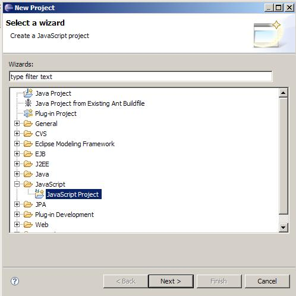
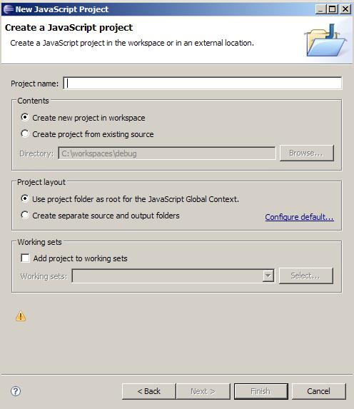
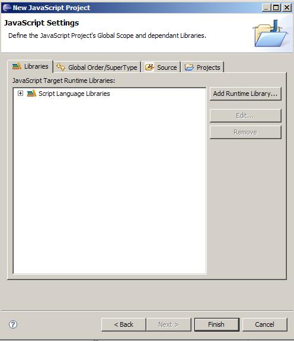
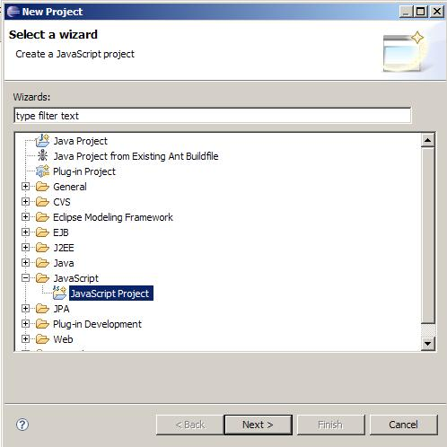
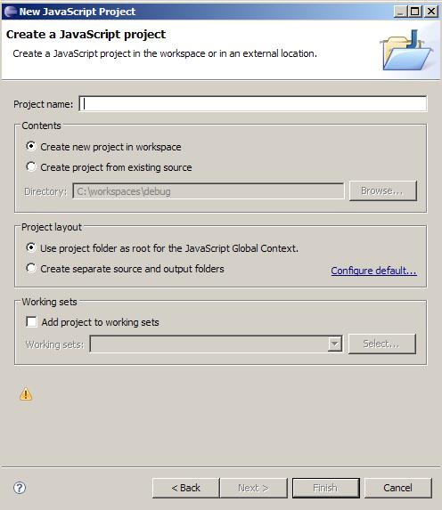
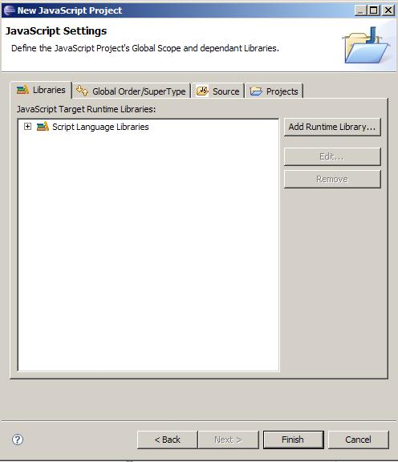

Select File --> New--> Project

Choose JavaScript Project from the New Project Wizzard Dialog

Type a project name in the Project Name field and click Next

Click Finish to complete creation of the JavaScript project

To begin editing JavaScript source (*.js files) you will have to create a new JavaScript project to work in.
Create your new project now using the following steps:
Select File --> New--> Project
Choose JavaScript Project from the New Project Wizzard Dialog

Type a project name in the Project Name field and click Next

Click Finish to complete creation of the JavaScript project
